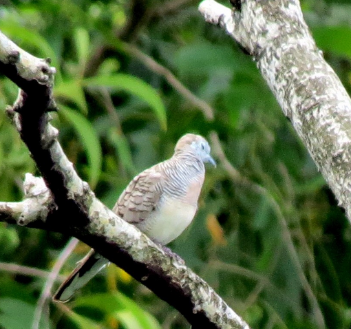
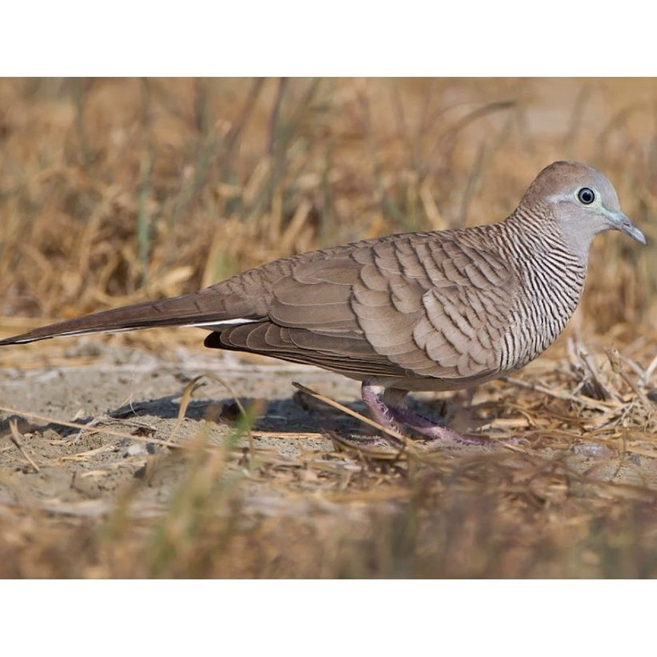

Profil Burung Perkutut Jawa
Burung Perkutut Jawa dengan nama latin Geopelia striata adalah burung berukuran kecil yang banyak dikenal karena suara kicaunya yang merdu. Burung ini memiliki tubuh ramping, warna bulu cokelat keabu-abuan, serta corak garis-garis hitam dan putih pada bagian leher dan dadanya.
Perkutut Jawa hidup di berbagai lingkungan, seperti daerah terbuka, perkebunan, dan sekitar permukiman. Burung ini sering dipelihara karena suaranya yang khas dan penampilannya yang menarik.
Profil Perkutut Jawa
- Nama ilmiah: Geopelia striata.
- Ukuran tubuh: sekitar 20–23 cm.
- Warna bulu: cokelat keabu-abuan dengan corak garis hitam putih.
- Makanan: biji-bijian seperti millet dan gabah.
- Habitat: area terbuka, kebun, persawahan, dan lingkungan permukiman.
Cara Beternak Perkutut Jawa
-
Pemilihan Bibit
Pilih indukan yang sehat, aktif, memiliki bulu rapi, dan tidak menunjukkan tanda-tanda sakit. Pastikan burung memiliki kondisi tubuh yang baik. -
Persiapan Kandang Budidaya
Siapkan kandang yang bersih, aman, memiliki sirkulasi udara yang baik, serta cukup ruang agar burung dapat bergerak dengan nyaman. -
Proses Penjodohan
Kenalkan burung jantan dan betina secara bertahap. Amati perilakunya dan pastikan keduanya dapat beradaptasi sebelum ditempatkan bersama. -
Tahap Pemeliharaan Anakan
Jaga kebersihan kandang, sediakan pakan dan air minum setiap hari, serta pantau kondisi induk dan anakan secara rutin.
Galeri Perkutut Jawa




Tertarik untuk Budidaya / Memelihara Perkutut Jawa?
Penawaran Khusus Bagi Anda
Harga 1 ekor Perkutut Jawa: Rp75.000
Harga dapat berubah sesuai jenis dan kondisi burung.
Berminat atau ingin bertanya? Hubungi kami melalui WhatsApp.